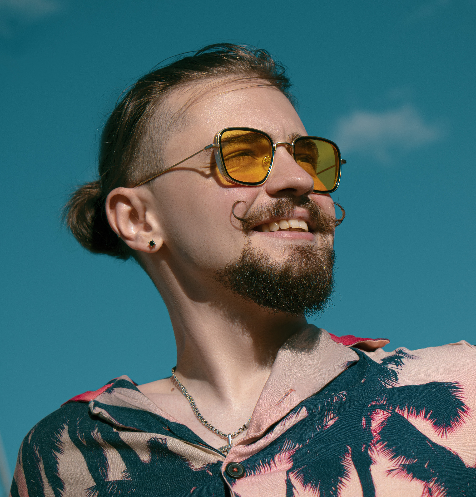

Artur Demichev

Summary
I am a dedicated young professional with a background in film production and experience in creative project management and team collaboration.
Recently, I have transitioned into game development, focusing on mastering Unity and C#.
My background in storytelling and visual design from film production has greatly contributed to my approach in game design.
My experience in designing levels, developing game concepts, and adapting projects based on player feedback for personal projects has fueled my passion for pursuing a career in IT.
In addition, I am actively studying HTML, CSS, and JavaScript to further expand my skills in web development.
Experience
Content Manager & Creative Project Specialist:
LITNET, 2022 – PresentIntern:
AMA Film Academy: Feb 2023 – Jul 2024Content Coordinator:
Le-mur Media, 2020 – 2022Assistant to General Director:
ZLODEI, 2019 – 2020
Personal projects
Personal TTRPG Project:
“Sparklines: Strings of Fate”, Ongoing
Director and Production Coordinator
for “Call of the Void” (2023)
First AD for music video "2021"
by Kuba Folwarczny, Dec 2023
Education
Krakowska Akademia im. Andrzeja Frycza Modrzewskiego
Bachelor’s Degree in Film Production, 2021 – 2024
- Focus on creative production, project management, and multimedia content creation.
- Gained practical experience through internships and collaborative projects.
Skills
Technical:
C#, .NET, Unity, HTML, Functional Testing, SQL, Jira, Notion, Trello, Miro, Microsoft Office (Word, Excel, PowerPoint), Google Sheets, Midjourney, OpenAI. Creative:
Storytelling, game module design, narrative development, video production, basic graphic design (Adobe Photoshop, Canva), project management.Soft Skills:
Problem-solving, leadership, time management, adaptability, attention to detail.Currently studying:
JavaScript, CSS, Github, Gitlab, Agile, Unreal Engine 5.
Languages
Polish (C1), English (B2), Ukrainian (native), Russian (native).